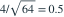

样本来自  ，样本量为 64。检验
，样本量为 64。检验  ，拒绝域为
，拒绝域为  。要使显著性水平为 0.05，取
。要使显著性水平为 0.05，取  ，c 应为多少？
，c 应为多少？
，样本量为 64。检验 ，拒绝域为 。要使显著性水平为 0.05，取 ，c 应为多少？- A0.49
- B7.84
- C0.98
- D1.96
我已思考，展开答案与解析
正确答案：C
- 已知总体标准差为 4，所以样本均值的标准误为

。 - 双侧 5% 检验的拒绝阈值为 。
易错提醒正态分布的第二个参数为方差；要先取平方根得到标准差。
南审 813 · 2026 · 二·3(1)(a)，PDF第2页
从大题拆分考点并重新编写选项；数值或设问有调整。
查看参考来源